Chapter 10: Timing, Control and the Instruction Cycle¶
How a counter and two decoders turn a stored word into a timed sequence of register transfers, and how the seven memory-reference instructions are carried out microoperation by microoperation.
The previous chapter described the basic computer as a static object: a memory, eight registers, a shared bus and a 16-bit instruction word. A circuit diagram of that machine, however, does not move. Nothing in it says when PC should be copied into AR, when the memory should be read, or which of the 25 instructions is being obeyed. This chapter supplies the heartbeat. A small counter, called the sequence counter, steps through timing signals T0, T1, T2, and so on; a decoder watching the instruction register announces which operation has been fetched; and a block of logic gates combines the two to say, at every clock pulse, exactly which register drives the bus and which register listens.
Once the timing is in place we can follow the loop that the processor never leaves: fetch an instruction, decode it, find its operand and execute it. We study the fetch and decode steps, the fork at time T3 that sorts every instruction into one of four cases, and then the execution of the seven memory-reference instructions AND, ADD, LDA, STA, BUN, BSA and ISZ, each written out exactly. The chapter closes with a collection of full traces, where every register is tracked through every timing step, because this is the kind of question that tests whether you understand the machine rather than having memorised it.
What you will learn
- Distinguish program, instruction, microoperation and control signal, and name the four categories of microoperation.
- Explain how the sequence counter, the 4-to-16 decoder and the 3-to-8 decoder generate the timing signals
T0toT15and the operation signalsD0toD7, and read a control function such asD3T4. - Write the fetch and decode microoperations, with the bus signals each one uses, and explain why
PCis incremented atT1. - Describe the four mutually exclusive cases at
T3and say what each does. - Write the microoperations of
AND,ADD,LDA,STA,BUN,BSAandISZ, and explain the design reasons behind them. - Trace any instruction through the instruction cycle with a table of register contents after each timing signal.
10.1 Programs, instructions and microoperations¶
Four levels of description are used for a computer, and it helps to be exact about where each word belongs.
- A program is a sequence of instructions that performs a task. You write it. For example,
X = A + Bmight becomeLDA A,ADD B,STA X. - A machine instruction is one binary word that the processor fetches, decodes and executes. It takes several clock pulses.
2350is the instructionLDA 350. - A microoperation is one elementary register transfer, completed in one clock pulse. It is the atom of the machine:
AR ← PCis a microoperation. - A control signal is an actual wire that makes a microoperation happen: for
AR ← PC,S2S1S0 = 010andLD(AR) = 1.
In a hardwired machine there are only these four levels: gates produce the control signals directly. In a microprogrammed machine one extra level sits between microoperations and control signals, the microinstruction, a control word read from a control memory whose bits are the control signals for one clock pulse; the whole collection of such words is the microprogram. We open that box in the chapter on control-unit design. For now, say it in one line: a program is made of instructions; an instruction is carried out as a sequence of microoperations; each microoperation is one clock pulse of control signals.
Example 10.1: One instruction is a sequence of clock pulses
Problem. List the microoperations by which LDA 350 (direct, hex 2350) is carried out.
Solution. Fetch, decode and execute together take six clock pulses:
T0: AR ← PC
T1: IR ← M[AR], PC ← PC + 1
T2: D0..D7 ← decode IR(12-14), AR ← IR(0-11), I ← IR(15)
T3: (direct: nothing to do)
D2T4: DR ← M[AR]
D2T5: AC ← DR, SC ← 0
One instruction, six clock pulses, organised by the six timing signals T0 to T5.
The four categories of microoperation¶
A microoperation is an elementary operation performed on data stored in registers, completed within one clock pulse. Every machine, however complex, is built from just four kinds.
| Category | What it does | RTL examples | Where it appears in the basic computer |
|---|---|---|---|
| Register transfer | Copies the contents of one register into another; no data is changed | R2 ← R1, AR ← PC |
every LD on the common bus; the whole fetch phase |
| Arithmetic | Add, subtract, increment, decrement, complement | AC ← AC + DR, DR ← DR + 1 |
ADD, INC, ISZ, and PC ← PC + 1 in every fetch |
| Logic | Bit-by-bit AND, OR, XOR, complement; each bit independent of its neighbours | AC ← AC ∧ DR, AC ← AC' |
AND, CMA, CME, CLA, CLE |
| Shift | Move bits sideways: logical, circular or arithmetic | AC ← shr AC, AC ← shl AC |
CIR and CIL (circular, through E) |
A microoperation is defined by how long it takes, not by how simple it looks: whatever the hardware can finish between two clock edges. That is why AR ← PC and PC ← PC + 1 fit in one step (different hardware paths) but two bus transfers never can, since they would need the single bus twice. The conventions for reading register transfer language were given in the previous chapter; the one new feature is the control function, a Boolean condition written before a colon, so that D3T4 : SC ← 0 means "when the instruction is STA (D3) and the timing signal is T4, clear the sequence counter".
10.2 The control unit's clock: SC, decoders and timing signals¶
All flip-flops and registers, including those inside the control unit, are driven by a common master clock. A clock pulse changes the state of a register only if its control inputs (LD, INR, CLR) are enabled, and the control unit's job is to generate those control signals at the right moments. For the basic computer the control unit is hardwired: its signals are produced by decoders, gates and flip-flops, with the logic fixed in the wiring.
Its components are three.
The instruction register. Bits 12-14 of IR go to a 3-to-8 decoder, which produces eight operation signals \(D_0, D_1, \dots, D_7\), exactly one of which is 1. The signal that is high is the identity of the instruction. Bit 15 of IR is stored in the flip-flop I. Bits 0-11 are the address part: they go to AR, and (for register-reference and input-output instructions) also into the control logic, where they select the individual operations.
| Signal | Opcode | Instruction |
|---|---|---|
| \(D_0\) | 000 |
AND |
| \(D_1\) | 001 |
ADD |
| \(D_2\) | 010 |
LDA |
| \(D_3\) | 011 |
STA |
| \(D_4\) | 100 |
BUN |
| \(D_5\) | 101 |
BSA |
| \(D_6\) | 110 |
ISZ |
| \(D_7\) | 111 |
register-reference or input-output (the escape code) |
The sequence counter SC. A 4-bit counter that is incremented on every clock pulse unless it is cleared. Its output goes to a 4-to-16 decoder, whose outputs are the timing signals \(T_0, T_1, \dots, T_{15}\). Exactly one timing signal is 1 at a time. The sequence counter is a metronome that also numbers the beats: on beat T0 one microoperation fires, on T1 the next, and the whole orchestra of registers plays strictly in time. The clever part is the ending. Instead of counting all the way to T15, an instruction that finishes early simply executes SC ← 0, which snaps the counter back to zero so that T0 comes round again and the next instruction begins. That is why a simple instruction such as BUN is fast and a complex one such as ISZ takes more beats: each uses only as many timing signals as it needs. The basic computer never needs more than T6.
The control logic gates. A combinational circuit whose inputs are the \(D\) and \(T\) signals, the flip-flop I, bits of IR, and status bits (E, bits of AC, DR = 0, the flags), and whose outputs are all the control inputs of the machine: the LD, INR and CLR of every register, the memory Read and Write, the bus selection S2S1S0, and the control of the adder-and-logic circuit. Its outputs also feed the INR and CLR inputs of SC, ending a timing sequence.
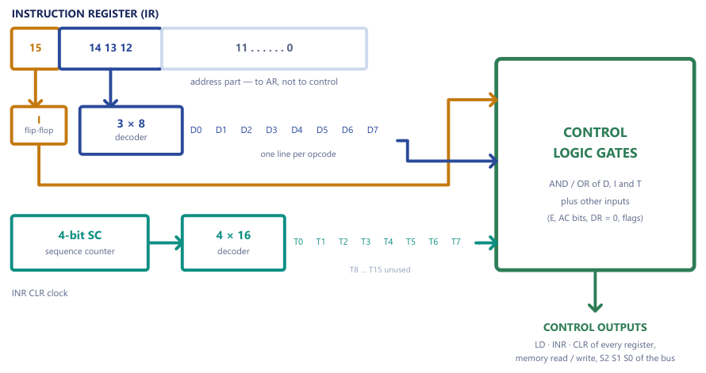
Figure 10.1 puts the pieces together. It is worth reading as two feeds and one block. What to do comes from the instruction register: bit 15 becomes the flip-flop I, and bits 12-14 are decoded into \(D_0 \dots D_7\), one line per opcode. When to do it comes from the sequence counter, decoded into \(T_0 \dots T_{15}\). The control logic gates AND those two together, which is literally what a control function such as \(D_3T_4\) means.
Why both decoders are needed
One decoder alone cannot control anything. \(D_3\) says "this is an STA" but not when to act; \(T_4\) says "beat four" but not of what. Only the AND of the two, \(D_3T_4\), is a usable order: "on beat four of an STA, write AC into memory." The control logic gates are nothing more than an array of such AND gates, ORed together one per control line. A primed symbol means NOT: \(D_7'IT_3\) means "not opcode 111, indirect, at T3".
Reading the timing diagram¶
Figure 10.2 shows the timing signals for an STA instruction (D3). The clock ticks continuously; each rising edge increments SC, so T0, T1, T2 and so on follow one another, one per pulse. D3 rises once the opcode has been decoded (the decode step is T2), and stays high while the instruction is executed. At D3T4 the counter is cleared, which is the signal marked CLR SC, so T0 follows T4 and the next instruction cycle begins. Note that a register loaded on a clock edge changes at that edge: a transfer written for T0 is complete when T1 begins.
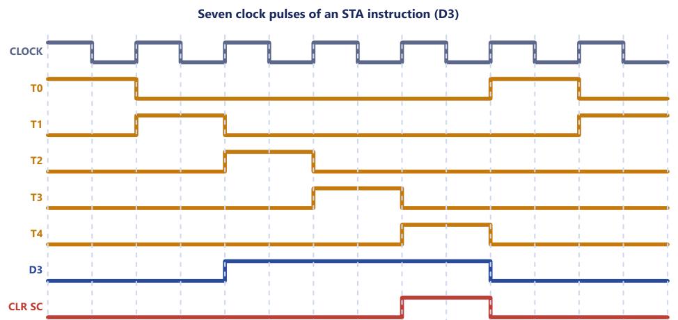
10.3 The instruction cycle: fetch and decode¶
A program is executed by going through a cycle for each instruction. Each instruction cycle consists of four phases:
- Fetch an instruction from memory into
IR. - Decode the instruction: work out the opcode (\(D_0 \dots D_7\)) and the mode bit
I, and move the address field intoAR. - Read the effective address from memory if the instruction has an indirect address: replace
ARwith the pointer it names. - Execute the instruction, as a sequence of microoperations ending in
SC ← 0.
On completion of step 4, control returns to step 1 for the next instruction, and this continues until a halt is encountered. The cycle is the picture to keep in your head: everything in this unit is one loop, fetch, decode, execute, repeat, running over a program that is itself stored in memory.
The fetch and decode microoperations¶
SC is initially 0, so the timing signal T0 is active and PC holds the address of the first instruction. The first three timing steps are the same for every instruction.
T0: AR ← PC
T1: IR ← M[AR], PC ← PC + 1
T2: D0, ..., D7 ← decode IR(12-14), AR ← IR(0-11), I ← IR(15)
T0:AR ← PC. The address of the next instruction is copied intoAR, because memory can be addressed only throughAR. Signals: placePCon the bus (S2S1S0 = 010) and enableLD(AR).T1:IR ← M[AR], PC ← PC + 1. The instruction is read intoIR(memory read, source111,LD(IR)) andPCis incremented to point at the next instruction (INR(PC)). Both happen in one pulse becausePC's increment does not use the bus.T2: decode. The opcode bitsIR(12-14)go to the 3-to-8 decoder, raising one of \(D_0 \dots D_7\); the 12-bit addressIR(0-11)is placed inAR(source101,LD(AR)); and the mode bitIR(15)is stored inI.
Why must AR ← PC come before M[AR] can be read? The address input of the memory unit is connected to AR alone. PC holds the address we want to read, but memory cannot see PC, so the address is first copied into AR; only then is M[AR] the word we meant. Note also the hand-over of AR: it holds the instruction's own address during fetch, but at T2 it is overwritten with the address field and from then on holds the operand's address. Tracking that hand-over is what many examination questions are really testing.
PC is incremented at T1, not after the instruction
A common misconception is that PC is bumped when the instruction finishes. In fact PC ← PC + 1 happens at T1, during fetch, before the processor even knows what the instruction is. This is exactly why a branch works by overwriting PC at execution time: the default "next" address has already been loaded, and a jump simply replaces it. It is also why BSA can save PC as the return address: PC already points at the instruction after the call. Fetch always assumes "straight ahead"; only branches change their mind later. Consequently, after any instruction, PC is one past the instruction (or has been overwritten by a branch), not equal to the instruction's own address.
Example 10.2: Write the fetch and decode microoperations and explain the order
Problem. Write the microoperations of the fetch and decode phases of the basic computer, state which of them need the bus, and explain why AR ← PC must come before M[AR] can be read.
Solution.
T0: AR ← PC
T1: IR ← M[AR], PC ← PC + 1
T2: D0..D7 ← decode IR(12-14), AR ← IR(0-11), I ← IR(15)
T0 needs the bus (PC talks, AR listens). At T1, IR ← M[AR] uses the bus (memory talks, IR listens) while PC ← PC + 1 uses PC's own increment input and never touches the bus; so there is no conflict and one clock pulse does both. At T2 the AR load from IR(0-11) uses the bus. AR ← PC comes first because the memory's address input is wired to AR alone: PC must be copied into AR before the word M[AR] is the one we want.
The increment PC ← PC + 1 belongs at T1, together with the load of IR; writing it at T0 or T2 is a common mistake.
10.4 The fork at T3: four mutually exclusive cases¶
After decoding, the timing signal T3 uses \(D_7\) (is the opcode 111?) and I to choose the class of instruction. There are two yes/no questions: "is this one of my seven memory jobs, or an opcode-111 job?" (that is \(D_7\)) and "direct or indirect?" (that is I). Two yes/no questions sort every instruction in the machine into one of four queues, and exactly one branch is taken.
| Condition | Meaning | What happens at T3 |
|---|---|---|
D7'IT3 |
memory-reference, indirect | AR ← M[AR]: fetch the effective address |
D7'I'T3 |
memory-reference, direct | nothing: AR already holds the effective address |
D7I'T3 |
register-reference | execute it now; SC ← 0 |
D7IT3 |
input-output | execute it now; SC ← 0 |
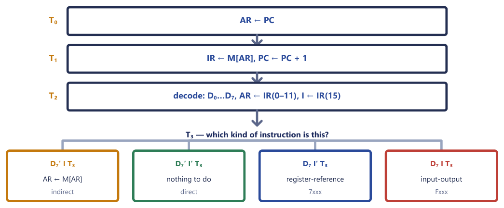
Figure 10.3 shows the whole picture: every instruction starts the same way, and T3 is where the four paths part.
For the two opcode-111 classes the whole operation completes at T3 and then SC ← 0: they need no operand from memory, so there is nothing left to do, and they never reach T4. For memory-reference instructions (\(D_7 = 0\)) execution proper begins at T4, with the effective address in AR. The indirect step D7'IT3: AR ← M[AR] is shared by all seven memory-reference instructions: it belongs to the cycle, before the execute phase, and not to any particular instruction. That is why it is written \(D_7'IT_3\) and not \(D_2IT_3\).
What D7 means
\(D_7\) means "opcode = 111", not "instruction number 7". It is the decoder output for the escape code, so it marks the two non-memory formats. \(D_7'\) ("not 111") therefore means a memory-reference instruction.
Indirect addressing costs a memory read, not a clock pulse
When I = 1 the T3 slot is spent on the extra memory read AR ← M[AR]. When I = 0 the slot is not skipped: SC still counts through T3, which simply passes with nothing to do. So a direct and an indirect instruction take the same number of clock pulses; what differs is that the indirect one performs one additional memory access (the signals are S2S1S0 = 111, Read, LD(AR)).
Effective-address resolution is thus completely described by the fork. Direct: after T2, AR already holds the effective address. Indirect: after T3, AR holds M[address field], and that is the effective address.
Tracing the fetch cycle¶
The best habit when answering a trace question is to write the answer as a table: timing signal, microoperation, resulting register values. Markers look for the microoperation column, not prose.
Example 10.3: Fetch-cycle trace, direct instruction
Problem. PC = 021 and memory word 021 contains the instruction 2350 (LDA, direct, 350). Trace the register contents through T0-T3.
Solution. 2350 = 0010 0011 0101 0000, so I = 0 and the opcode is 010.
| Step | Microoperation | Result |
|---|---|---|
T0 |
AR ← PC |
AR = 021 |
T1 |
IR ← M[AR], PC ← PC + 1 |
IR = 2350, PC = 022 |
T2 |
decode opcode 010; AR ← IR(0-11); I ← IR(15) |
D2 = 1, AR = 350, I = 0 |
T3 |
D7'I'T3 is true: do nothing |
AR = 350 is already the effective address |
Answer. After T3: PC = 022, IR = 2350, AR = 350 (= EA), D2 = 1, I = 0. Execution of LDA continues at T4.
The same trace, one timing signal at a time, with the registers, the bus and the memory word that is read:
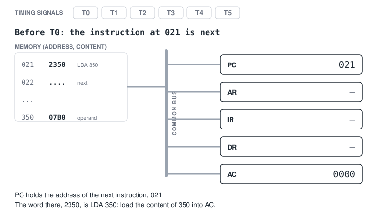
1Before T0: PC holds 021 and memory word 021 is 2350, the instruction LDA 350.
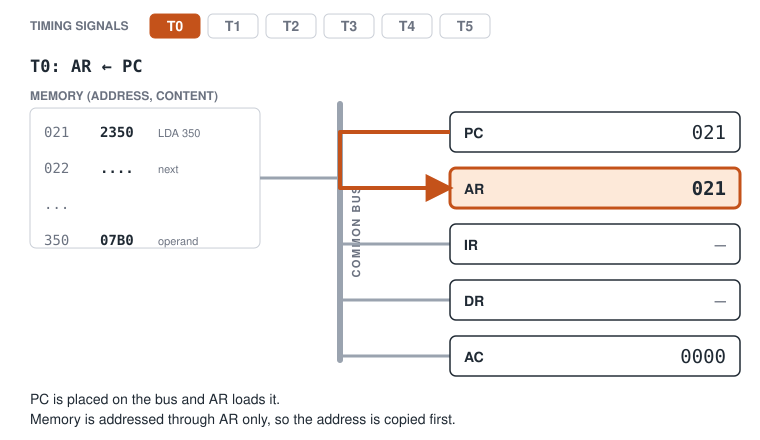
2T0, AR ← PC. The address of the instruction is copied into AR, the only register that addresses memory.
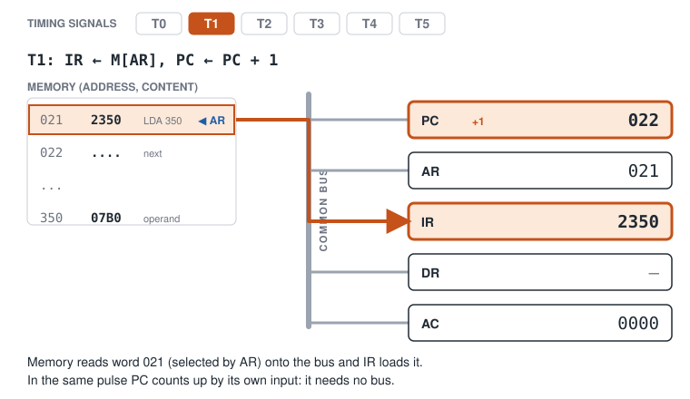
3T1, IR ← M[AR] and PC ← PC + 1. The instruction is read into IR while PC moves on to 022.
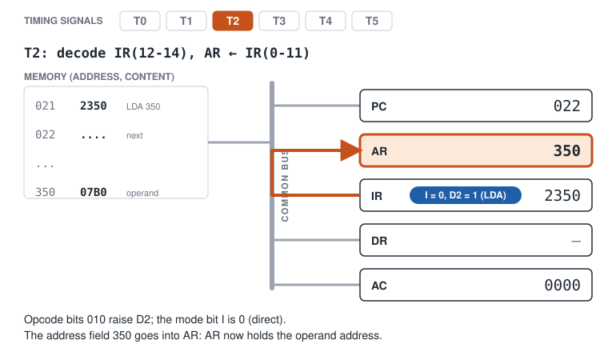
4T2, decode. Opcode 010 raises D2, I is 0, and the address field 350 is loaded into AR.
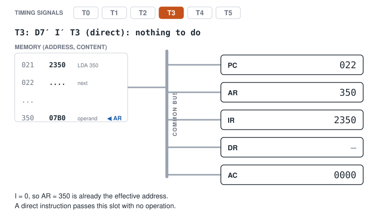
5T3, direct addressing. Nothing to do: AR already holds the effective address.
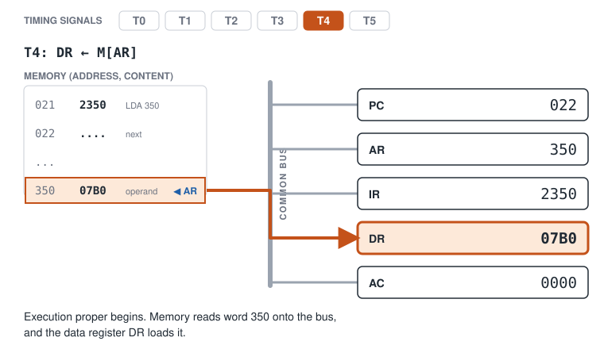
6T4, DR ← M[AR]. The operand 07B0 is read from word 350 into DR.
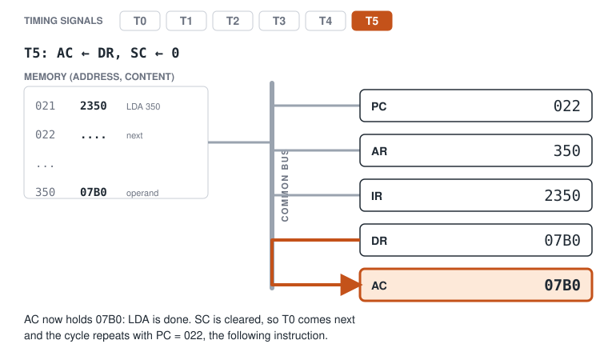
7T5, AC ← DR and SC ← 0. LDA is complete and the next cycle starts at T0 with PC = 022.
Example 10.4: Fetch-cycle trace, indirect instruction
Problem. PC = 021, M[021] = A350 (LDA indirect, field 350) and M[350] = 07B0. Trace T0-T3.
Solution. A = 1010, so I = 1 and the opcode is 010 (LDA).
| Step | Microoperation | Result |
|---|---|---|
T0 |
AR ← PC |
AR = 021 |
T1 |
IR ← M[AR], PC ← PC + 1 |
IR = A350, PC = 022 |
T2 |
decode; AR ← IR(0-11); I ← IR(15) |
D2 = 1, AR = 350, I = 1 |
T3 |
D7'IT3 is true: AR ← M[AR] |
AR = M[350] = 07B0, i.e. 7B0, the real EA |
Answer. The effective address is 7B0. Indirect addressing used the T3 slot for one extra memory read.
Example 10.5: A fetch with real numbers
Problem. PC contains 021 and memory word 021 contains 0083 (all hex). Give the contents of AR, IR and PC after T0, after T1 and after T2.
Solution.
- After
T0(AR ← PC):AR = 021.PCis still021,IRunchanged. - After
T1(IR ← M[AR], PC ← PC + 1):M[021] = 0083, soIR = 0083andPC = 022.ARis still021. - After
T2(decode):IR = 0083 = 0000 0000 1000 0011. Bit 15 =I= 0. Bits 14-12 =000, soD0= 1, anAND. Bits 11-0 =083are copied intoAR. SoAR = 083,IR = 0083,PC = 022,I = 0.
The usual error is to leave AR at 021 after T2: AR is reused, and it now holds the operand's address.
10.5 The seven memory-reference instructions¶
Every memory-reference instruction is decoded to one of \(D_0 \dots D_6\) and executes starting at T4, once the effective address is in AR. DR is the buffer that holds the memory operand, and every sequence ends with SC ← 0, which returns control to T0 for the next fetch.
| Instruction (\(D_k\)) | Microoperations (execute phase) |
|---|---|
AND (\(D_0\)) |
D0T4: DR ← M[AR]; D0T5: AC ← AC ∧ DR, SC ← 0 |
ADD (\(D_1\)) |
D1T4: DR ← M[AR]; D1T5: AC ← AC + DR, E ← Cout, SC ← 0 |
LDA (\(D_2\)) |
D2T4: DR ← M[AR]; D2T5: AC ← DR, SC ← 0 |
STA (\(D_3\)) |
D3T4: M[AR] ← AC, SC ← 0 |
BUN (\(D_4\)) |
D4T4: PC ← AR, SC ← 0 |
BSA (\(D_5\)) |
D5T4: M[AR] ← PC, AR ← AR + 1; D5T5: PC ← AR, SC ← 0 |
ISZ (\(D_6\)) |
D6T4: DR ← M[AR]; D6T5: DR ← DR + 1; D6T6: M[AR] ← DR, if (DR = 0) then (PC ← PC + 1), SC ← 0 |
Learn this table and roughly a third of the unit is in your pocket; better still, learn to read it as a story. Notice a rhythm. Instructions that use a memory value (AND, ADD, LDA, ISZ) all start with the same line, DR ← M[AR]: "first go and fetch the operand". They then differ only in what they do with it: AND combines it, ADD sums it, LDA just copies it, ISZ bumps it and writes it back. STA and the two branches skip the read entirely, because they have nothing to read. If you can tell which instructions need to read memory first, half the table writes itself.
Common mistake
Students often forget that STA, BUN and BSA do not need to read the operand, so they have no DR ← M[AR] step. Only AND, ADD, LDA and ISZ fetch the memory word into DR first. After any memory-reference instruction: PC has advanced by 1 (or been overwritten by a branch), SC is back at 0, and AR holds the effective address that was used.
AND, ADD and LDA¶
These three need an operand from memory, so all three begin at T4 by reading it into DR: DR is the only register connected to the second input of the adder-and-logic circuit. At T5 the circuit forms AC ∧ DR (AND, a bitwise operation), AC + DR with the carry out of bit 15 going to E (ADD), or simply passes DR through to AC (LDA). LDA could not be done as AC ← M[AR] directly, because AC has no path from the bus.
The flip-flop E is the seventeenth bit of AC: the place a carry has to go when two 16-bit numbers add to more than 16 bits. It is cleared when no carry occurs, so after an ADD it always shows the carry out of that addition. E is also what CIR and CIL rotate through, and what SZE tests.
Example 10.6: ADD with no carry
Problem. AC = 000A, the memory word at the effective address (AR = 350) contains 0007, and E = 0. Trace the execute phase of ADD (D1) and give the final AC and E (hex).
Solution.
D1T4: DR ← M[AR] DR = 0007
D1T5: AC ← AC + DR, E ← Cout 000A + 0007 = 0011; no carry out of bit 15, so E ← 0
SC ← 0
Answer. AC = 0011, E = 0.
Example 10.7: ADD that overflows into E
Problem. AC = FFFF, M[EA] = 0003, E = 0. What are AC and E after ADD?
Solution. FFFF + 0003 = 1 0002 in 17 bits. The low 16 bits stay in AC; the seventeenth bit, the carry out, is loaded into E.
Answer. AC = 0002, E = 1. E is the extended-AC bit: think of it as the 17th bit that catches what will not fit.
STA¶
STA stores AC in memory. No operand needs to be read, so it completes in one step: AC is placed on the bus (S2S1S0 = 100) and the memory writes it at the address in AR. STA is the only instruction that writes memory without first reading it, and it is the shortest memory-reference instruction together with BUN. It is the mirror image of LDA: it puts AC into memory and needs no DR at all. Because there is no DR ← M[AR] step, STA is exactly one timing step shorter than LDA, which must read at T4 and copy at T5.
BUN¶
D4T4: PC ← AR, SC ← 0. The effective address becomes the address of the next instruction. A branch is nothing more than a load into PC: AR drives the bus (S2S1S0 = 001) and LD(PC) is asserted. There is no magic to a jump: you overwrite the bookmark and the machine carries on from the new place. It works precisely because fetch already advanced PC: the default "next" address is simply replaced.
BSA: subroutine call with no stack¶
The basic computer has no stack, and BSA (branch and save return address) is how it calls a subroutine. Before jumping into the subroutine, it writes down where it came from, in the word just before the subroutine starts, and then jumps to the word after that.
D5T4: M[AR] ← PC, AR ← AR + 1 (save the return address; step past it)
D5T5: PC ← AR, SC ← 0 (jump to the first real instruction)
PC is the right thing to save. It was incremented during fetch, so it already points at the instruction after the call, which is precisely the address from which execution must resume. Figure 10.4 shows the effect for BSA 470 stored at location 30: after fetch PC = 31; 31 is written into word 470, and PC becomes 471, the first word of the subroutine body.
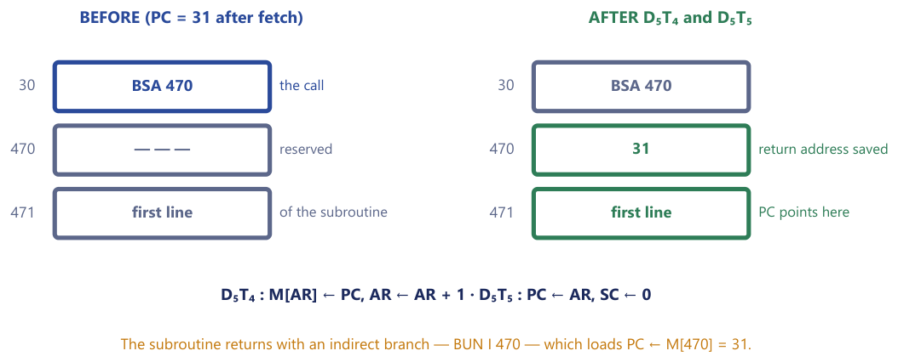
The subroutine returns with an indirect branch through its own first word. The last instruction of the routine is BUN 470 with I = 1 (hex C470): at T3 it performs AR ← M[470] = 31, and at D4T4 it loads PC ← AR = 31, exactly where the caller left off. A plain BUN 470 would jump to the word holding the return address itself and execute the stored number as an instruction, which is why the return must be indirect.
BSA takes two timesteps because M[AR] ← PC and PC ← AR both use the bus (PC is the source in the first, AR in the second) and so cannot share a pulse; the increment of AR is local (INR(AR)) and can share the first. A limitation is that the return address sits at a fixed place, so a subroutine cannot call itself recursively.
Example 10.8: BSA 135 stored at 021
Problem. PC = 021, M[021] = 5135 (BSA 135, direct), M[135] = 0000. Trace the whole instruction and give PC, AR and M[135] at the end.
Solution. 5 = 0101, so I = 0 and the opcode is 101 (BSA).
| Step | Microoperation | Result |
|---|---|---|
T0 |
AR ← PC |
AR = 021 |
T1 |
IR ← M[AR], PC ← PC + 1 |
IR = 5135, PC = 022 |
T2 |
decode | D5 = 1, AR = 135, I = 0 |
T3 |
direct: nothing | |
D5T4 |
M[AR] ← PC, AR ← AR + 1 |
M[135] = 022, AR = 136 |
D5T5 |
PC ← AR, SC ← 0 |
PC = 136 |
Answer. PC = 136, AR = 136, M[135] = 0022. The subroutine body starts at 136; the last instruction of the routine is BUN 135 with I = 1 (hex C135), which reads M[135] = 022 and loads PC with it.
Example 10.9: BSA 470 stored at location 30
Problem. Write the microoperations for BSA. If BSA 470, stored at location 30, is executed, answer: (i) at which location is the return address saved? (ii) to which location does control transfer? (iii) which instruction is used at the end of the subroutine to return? (iv) what value is loaded into PC when the return instruction executes?
Solution. The microoperations are D5T4: M[AR] ← PC, AR ← AR + 1 and D5T5: PC ← AR, SC ← 0. The instruction sits at 30, so fetch set PC = 31 before the execute phase began; 31 is the return address.
D5T4:M[AR] ← PCwithAR = 470givesM[470] = 31; thenAR ← AR + 1givesAR = 471.D5T5:PC ← ARgivesPC = 471. The next instruction fetched is the one at471, the first line of the subroutine.- Return: the last instruction of the subroutine is an indirect branch,
BUN I 470. Indirect meansAR ← M[470] = 31, thenPC ← AR.
Answer. (i) The return address is saved at 470. (ii) Control transfers to 471. (iii) An indirect BUN, written BUN I 470, hex C470. (iv) PC is loaded with 31, the address just after the call.
Do not swap (i) and (ii): the return address goes in 470 and execution starts at 471.
ISZ: increment and skip if zero¶
ISZ increments a memory word and skips the next instruction if the result is zero.
D6T4: DR ← M[AR] (read the counter)
D6T5: DR ← DR + 1 (bump it)
D6T6: M[AR] ← DR, if (DR = 0) then (PC ← PC + 1), SC ← 0 (write back; maybe skip)
Memory cannot increment a word in place, so the word has to come out into DR, be incremented there (with INR(DR), which needs no bus), and be written back (S2S1S0 = 011, Write). That takes three separate steps, and ISZ is the longest instruction in the set. The skip is done by an extra increment of PC, which already points at the instruction following ISZ; incrementing it once more steps over that instruction.
What everyday construct is this one instruction secretly implementing? A counted loop. Put ISZ just before a BUN that jumps back to the top of the loop body. Initialise the counter to \(-N\); ISZ ticks it up towards zero, and on the tick that reaches zero the skip jumps over the BUN and the loop exits.
ORG 100
LOOP, ... / loop body
ISZ CTR / bump the counter; skip the next instruction when it reaches 0
BUN LOOP / not finished: go again
HLT / finished
CTR, DEC -3 / the loop body runs 3 times
Example 10.10: ISZ as a loop counter
Problem. A count is kept in memory location 040, currently holding FFFE (= \(-2\) in 16-bit two's complement). The instruction ISZ 040 sits just before a BUN that jumps back to the top of a loop. Trace the two ISZ executions and explain what construct this builds.
Solution.
First ISZ:
D6T4: DR ← M[040] = FFFE
D6T5: DR ← DR + 1 = FFFF
D6T6: M[040] ← FFFF; FFFF ≠ 0, so no skip
The following BUN runs and the loop repeats.
Second ISZ:
D6T4: DR ← FFFF
D6T5: DR ← 0000 (FFFF + 1 wraps to 0000)
D6T6: M[040] ← 0000; DR = 0, so PC ← PC + 1: the BUN is skipped
The loop exits. Because the counter started at \(-2\), the loop body ran exactly twice.
Answer. ISZ takes 040 from FFFE to FFFF (no skip), then from FFFF to 0000 (skip): a loop that executes its body twice. ISZ is the basic computer's for-loop primitive.
Example 10.11: Counting loop passes
Problem. M[040] = FFFD and the instruction ISZ 040 sits before a BUN back to the loop top (the loop body comes before the ISZ). How many times does the body run in total?
Solution. FFFD is \(-3\) in two's complement. Pass 1: body, then ISZ gives FFFE, not zero, so BUN repeats. Pass 2: body, ISZ gives FFFF, BUN repeats. Pass 3: body, ISZ gives 0000, the BUN is skipped.
Answer. The body runs 3 times, because the counter needed three increments to reach zero.
How many clock pulses does each instruction take?¶
Counting timing signals from T0 up to and including the one that clears SC, we get the length of each instruction in clock pulses.
| Instruction | Last timing signal | Clock pulses | Reads operand into DR? |
|---|---|---|---|
STA, BUN |
T4 |
5 | no |
AND, ADD, LDA, BSA |
T5 |
6 | AND, ADD, LDA yes; BSA no |
ISZ |
T6 |
7 | yes |
| register-reference, input-output | T3 |
4 | no |
These counts hold for both direct and indirect instructions, for the reason given earlier: T3 is spent either way. Different instructions take different numbers of pulses because each clears the sequence counter as soon as its own work is done; the thing that ends every one of them is SC ← 0, which sends the timing back to T0 for the next fetch. Forgetting SC ← 0 on the last microoperation of an instruction is a classic error.
10.6 Full instruction traces¶
The questions that carry the most marks ask for a whole instruction, from fetch to the last execute step. The method is the same every time.
- Build the instruction word from
I, the opcode and the address: the question rarely hands it to you. - Fetch:
AR ← PC, thenIR ← M[AR]andPC ← PC + 1. Write the newPCdown now and do not touch it again unless the instruction is a branch. - Decode:
AR ← IR(0-11),I ← IR(15), and note which \(D\) is set. - Indirect? If
I = 1,AR ← M[AR]once. - Execute the microoperations of that instruction, then
SC ← 0. - Keep a table with one row per timing step, and write a value only where it changes.
The two marks lost every year: PC was already incremented during fetch, so it is one past the instruction, not equal to it; and AR is overwritten at T2 with the address field, so it no longer holds the instruction's own address.
The first trace follows an instruction in motion, through every state of the machine. Figure 10.5 shows the machine at time T1 of this run: memory drives the bus with A083, which is being latched into IR while PC increments. Study the picture, then the table.
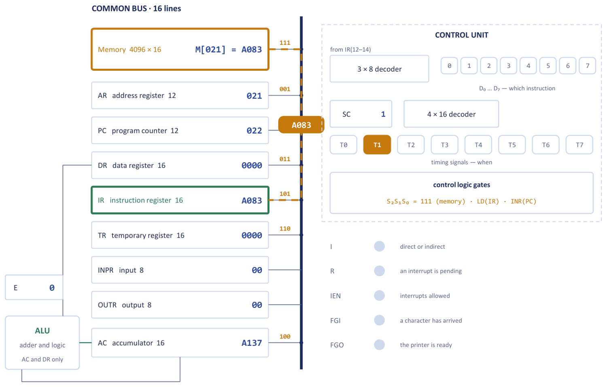
Example 10.12: LDA indirect, end to end
Problem. The instruction LDA I 083 is stored at address 021. PC = 021, AC = A137, M[021] = A083, M[083] = 0AC5 and M[AC5] = 8562. Trace the whole instruction, the longest ordinary path through the machine: fetch, decode, resolve the pointer, fetch the operand, land it in AC. A dash means "not yet written by this instruction".
Solution. A083: A = 1010, so I = 1, opcode 010 (LDA), address field 083.
| Step | Microoperation | Control signals | AR |
PC |
IR |
DR |
AC |
I |
|---|---|---|---|---|---|---|---|---|
| start | - | 021 |
- | 0000 |
A137 |
- | ||
T0 |
AR ← PC |
S=010, LD(AR) |
021 |
021 |
- | 0000 |
A137 |
- |
T1 |
IR ← M[AR], PC ← PC + 1 |
S=111, LD(IR), INR(PC) |
021 |
022 |
A083 |
0000 |
A137 |
- |
T2 |
decode; AR ← IR(0-11); I ← IR(15) |
S=101, LD(AR) |
083 |
022 |
A083 |
0000 |
A137 |
1 |
T3 |
D7'IT3: AR ← M[AR] |
S=111, LD(AR) |
AC5 |
022 |
A083 |
0000 |
A137 |
1 |
T4 |
D2T4: DR ← M[AR] |
S=111, LD(DR) |
AC5 |
022 |
A083 |
8562 |
A137 |
1 |
T5 |
D2T5: AC ← DR, SC ← 0 |
transfer DR, LD(AC), CLR(SC) |
AC5 |
022 |
A083 |
8562 |
8562 |
1 |
At T2, D2 = 1: the decoder raises the single wire that tells the whole machine this is an LDA. At T3 the 16-bit word 0AC5 read from M[083] is loaded into the 12-bit AR through its low 12 bits, giving AC5.
Answer. AC = 8562; final PC = 022, AR = AC5, IR = A083, DR = 8562. Three rules were obeyed at every step: memory was addressed only through AR; AC was fed only through the adder-and-logic circuit; and no two values crossed the bus in the same pulse.
Example 10.13: AND at address 021
Problem. An instruction stored at address 021 has I = 0, the opcode of AND and an address part 083 (hex). The word at 083 contains the operand 8562 and AC = A137. Determine PC, AR, DR, AC and IR at the end of the execute phase.
Solution. Build the word first: I = 0, opcode 000, address 083 gives 0 000 0000 1000 0011 = 0083.
| Step | Microoperation | Result |
|---|---|---|
T0 |
AR ← PC |
AR = 021 |
T1 |
IR ← M[AR], PC ← PC + 1 |
IR = 0083, PC = 022 |
T2 |
decode | D0 = 1, AR = 083, I = 0 |
T3 |
I = 0: nothing |
AR already holds the EA |
D0T4 |
DR ← M[AR] |
DR = 8562 |
D0T5 |
AC ← AC ∧ DR, SC ← 0 |
AC = 8122 (worked out below) |
The AND, nibble by nibble:
A137 = 1010 0001 0011 0111
8562 = 1000 0101 0110 0010
AND = 1000 0001 0010 0010 = 8122
Answer. PC = 022, AR = 083, DR = 8562, AC = 8122, IR = 0083. The two classic errors are leaving PC at 021 and leaving AR at 021. Note too that DR keeps the operand; it is not cleared.
Example 10.14: STA indirect, end to end
Problem. PC = 100. Word 100 holds B300 (STA, indirect, address field 300). Word 300 holds 0500. AC = 1234. Trace the entire instruction (hex throughout).
Solution. B = 1011: I = 1, opcode 011 (STA).
| Step | Microoperation | Result |
|---|---|---|
T0 |
AR ← PC |
AR = 100 |
T1 |
IR ← M[AR], PC ← PC + 1 |
IR = B300, PC = 101 |
T2 |
decode opcode 011; AR ← IR(0-11); I ← IR(15) |
D3 = 1, AR = 300, I = 1 |
T3 |
D7'IT3 true: AR ← M[AR] = M[300] |
AR = 500, the EA |
D3T4 |
M[AR] ← AC, SC ← 0 |
M[500] = 1234; next fetch begins |
Answer. The value 1234 is stored at address 500, found via the pointer in 300. Final: PC = 101, IR = B300, AR = 500, M[500] = 1234. DR is untouched, because STA needs no operand read. A direct STA would differ only in that T3 would pass with nothing to do and AR would already hold the address.
Example 10.15: ADD with an indirect operand
Problem. An instruction is stored at location 022. Its indirect bit I is 1, its opcode is that of ADD, and its address part is 06F. The word at 06F contains 0135, the word at 135 contains 2A4C, and AC before execution is 1B3D, PC = 022. All values are hexadecimal. (a) Write the instruction word. (b) List the fetch, decode and indirect microoperations. (c) Write the execute microoperations of ADD. (d) Give PC, AR, DR, AC, IR and E at the end.
Solution.
(a) ADD is 001, I = 1: 1 001 0000 0110 1111 = 906F. The three fields are I = 1 (bit 15, the address is indirect), opcode 001 (bits 14-12, ADD) and address 06F (bits 11-0, where to find the effective address).
(b)
T0: AR ← PC
T1: IR ← M[AR], PC ← PC + 1
T2: D0..D7 ← decode IR(12-14), AR ← IR(0-11), I ← IR(15)
D7'IT3: AR ← M[AR]
After T1 the program counter already holds 023. At T2 the address field 06F is placed in AR and I = 1, so at T3 the memory is read again and AR receives the contents of location 06F, namely 0135; the effective address is 135.
(c)
D1T4: DR ← M[AR]
D1T5: AC ← AC + DR, E ← Cout, SC ← 0
(d) The operand is the word at the effective address 135, which is 2A4C. Adding digit by digit from the right:
1B3D (AC before)
+ 2A4C (DR, the operand)
------
4589
D + C = 25 = 0x19: digit 9, carry 1. 3 + 4 + 1 = 8. B + A = 21 = 0x15: digit 5, carry 1. 1 + 2 + 1 = 4. No carry leaves bit 15, so E stays 0.
| Register | PC |
AR |
DR |
AC |
IR |
E |
|---|---|---|---|---|---|---|
| Contents (hex) | 023 |
135 |
2A4C |
4589 |
906F |
0 |
PC was incremented once during fetch and never changed again; AR holds the effective address, not the address field; IR still holds the whole instruction word.
Example 10.16: ADD that carries out of the word
Problem. The word at location 025 is 10B4. Location 0B4 contains 9C5A, AC contains 7B30 and E is 0. PC starts at 025. Give the registers at the end, including E.
Solution. 10B4 begins with 1, so I = 0 and the opcode is 001 (ADD); address 0B4.
| Step | Microoperation | Result |
|---|---|---|
T0 |
AR ← PC |
AR = 025 |
T1 |
IR ← M[AR], PC ← PC + 1 |
IR = 10B4, PC = 026 |
T2 |
decode | D1 = 1, AR = 0B4, I = 0 |
T3 |
direct: nothing | |
D1T4 |
DR ← M[AR] |
DR = 9C5A |
D1T5 |
AC ← AC + DR, E ← Cout, SC ← 0 |
AC = 178A, E = 1 |
The addition, digit by digit from the right: 0 + A = A; 3 + 5 = 8; B + C = 23 = 0x17: digit 7, carry 1; 7 + 9 + 1 = 17 = 0x11: digit 1, carry 1 out of the word. Check in decimal: \(31\,536 + 40\,026 = 71\,562\), and \(71\,562 - 65\,536 = 6026 = \text{0x178A}\). The accumulator is only 16 bits wide, so it keeps 178A, and the carry that fell off the top goes into E.
Answer. PC = 026, AR = 0B4, DR = 9C5A, AC = 178A, IR = 10B4, E = 1.
10.7 Summary¶
Key points
- A program is made of instructions; an instruction is carried out as a sequence of microoperations; each microoperation is one clock pulse of control signals. The four kinds of microoperation are register transfer, arithmetic, logic and shift.
- The sequence counter
SC(4 bits) feeds a 4-to-16 decoder givingT0-T15;IR(12-14)feeds a 3-to-8 decoder giving \(D_0\)-\(D_7\); the control logic gates AND them (a control function such as \(D_3T_4\)) and OR the results for each control line.SC ← 0ends an instruction. - Fetch and decode:
T0: AR ← PC;T1: IR ← M[AR], PC ← PC + 1;T2: D0..D7 ← decode IR(12-14), AR ← IR(0-11), I ← IR(15).PCis incremented atT1, not after execution. - At
T3exactly one of four cases:D7'IT3: AR ← M[AR](indirect);D7'I'T3: nothing (direct);D7I'T3register-reference andD7IT3input-output, executed atT3withSC ← 0. Memory-reference instructions execute fromT4. - Indirect addressing costs one extra memory read (it uses the
T3slot); it does not add a clock pulse. - Only
AND,ADD,LDAandISZread the operand intoDR;STA,BUNandBSAdo not. BSAsavesPCinM[EA]and jumps toEA + 1; the subroutine returns with an indirectBUNthrough its first word.ISZ(read, increment, write back, skip on zero) with a negative count builds a loop.- Method for traces: build the word, fetch, decode, indirect if
I = 1, execute,SC ← 0; keep a one-row-per-step table.
| Instruction | \(D\) | Microoperations (execute phase) | Clock pulses |
|---|---|---|---|
AND |
\(D_0\) | DR ← M[AR]; AC ← AC ∧ DR, SC ← 0 |
6 |
ADD |
\(D_1\) | DR ← M[AR]; AC ← AC + DR, E ← Cout, SC ← 0 |
6 |
LDA |
\(D_2\) | DR ← M[AR]; AC ← DR, SC ← 0 |
6 |
STA |
\(D_3\) | M[AR] ← AC, SC ← 0 |
5 |
BUN |
\(D_4\) | PC ← AR, SC ← 0 |
5 |
BSA |
\(D_5\) | M[AR] ← PC, AR ← AR + 1; PC ← AR, SC ← 0 |
6 |
ISZ |
\(D_6\) | DR ← M[AR]; DR ← DR + 1; M[AR] ← DR, if (DR = 0) PC ← PC + 1, SC ← 0 |
7 |
10.8 Exercises¶
Exercise 10.1. Write the fetch-and-decode microoperations (T0, T1, T2) of the basic computer and explain the purpose of each register transfer. What does the sequence counter SC do, and what does SC ← 0 accomplish?
Answer
T0: AR ← PC puts the instruction address where memory can see it (memory is addressed only through AR). T1: IR ← M[AR], PC ← PC + 1 reads the instruction into IR and advances PC to the next word (the increment is local, so it shares the pulse). T2: D0..D7 ← decode IR(12-14), AR ← IR(0-11), I ← IR(15) identifies the operation, moves the address field into AR, and records the mode bit. SC is a 4-bit counter, incremented each clock pulse and decoded into T0-T15, so it sequences the microoperations. SC ← 0 clears it at the last step of an instruction, so that T0 follows and the next instruction is fetched.
Exercise 10.2. Give the four control functions that can be active at T3 (in terms of \(D_7\) and I) and state what each one does. Which of them determines the effective address of an indirect memory-reference instruction?
Answer
D7'IT3: AR ← M[AR] (memory-reference, indirect: fetch the effective address). D7'I'T3: nothing (memory-reference, direct: AR already holds the EA). D7I'T3: execute a register-reference instruction, then SC ← 0. D7IT3: execute an input-output instruction, then SC ← 0. The first one, D7'IT3: AR ← M[AR], determines the effective address of an indirect instruction.
Exercise 10.3. Multiple choice.
- During fetch, the microoperation at
T1is: (A)AR ← PC, (B)IR ← M[AR], PC ← PC + 1, (C)AR ← IR(0-11), (D)SC ← 0. - For an indirect memory-reference instruction, the effective address is obtained at
T3by: (A)AR ← PC, (B)AR ← M[AR], (C)PC ← AR, (D)DR ← M[AR]. - Which memory-reference instruction is used to call a subroutine? (A)
BUN, (B)ISZ, (C)BSA, (D)STA. ISZincrements the memory word and skips the next instruction if the result is: (A) negative, (B) zero, (C) positive, (D) odd.
Answer
- B:
T0is theAR ← PCstep,T2the decode. 2. B: the pointer inAR's memory word replacesAR. 3. C:BSAsaves the return address. 4. B: it skips when the incremented word becomes zero.
Exercise 10.4. Write the complete register-transfer microoperations, with timing signals, for the memory-reference instructions (a) LDA, (b) STA, (c) ISZ. For ISZ, explain the condition under which the program counter is incremented.
Answer
(a) D2T4: DR ← M[AR]; D2T5: AC ← DR, SC ← 0. (b) D3T4: M[AR] ← AC, SC ← 0. (c) D6T4: DR ← M[AR]; D6T5: DR ← DR + 1; D6T6: M[AR] ← DR, if (DR = 0) then (PC ← PC + 1), SC ← 0. PC is incremented a second time (it already points past the ISZ after fetch) only when the incremented value is zero, which skips the next instruction; otherwise execution continues with it.
Exercise 10.5. Write the microoperations for BSA and explain, step by step, how it implements a subroutine call and how the subroutine later returns to the caller.
Answer
D5T4: M[AR] ← PC, AR ← AR + 1; D5T5: PC ← AR, SC ← 0. After fetch, PC already points at the instruction after the call, so it is the return address. At T4 that address is written into the word at the effective address (the first word of the subroutine) and AR moves on by 1; at T5 PC is loaded with AR, so the subroutine body (starting at the word after the saved address) runs next. The subroutine returns by an indirect branch through its first word, BUN I with the same address: AR ← M[AR] fetches the saved return address, and PC ← AR resumes the caller.
Exercise 10.6. Trace the execution of an ADD (direct) instruction given AC = 0F2C, E = 0 and the operand in memory = 00E0. Show DR, AC and E after each timing step and give the final AC and E.
Answer
D1T4: DR ← M[AR] gives DR = 00E0 (AC = 0F2C, E = 0 unchanged). D1T5: AC ← AC + DR, E ← Cout, SC ← 0 gives \(\text{0F2C} + \text{00E0} = \text{100C}\). There is no carry out of bit 15, so E = 0. Final: AC = 100C, E = 0.
Exercise 10.7. Trace the execution. PC = 200. Word 200 holds B4A0 (STA, indirect, address field 4A0); word 4A0 holds 0600; and AC = ABCD. Write the contents of PC, IR, AR, DR and any changed memory word after each timing signal. State the final effective address and which memory location is modified.
Answer
B4A0: B = 1011, I = 1, opcode 011 (STA). T0: AR = 200. T1: IR = B4A0, PC = 201. T2: D3 = 1, AR = 4A0, I = 1. T3 (D7'IT3): AR ← M[4A0] = 0600, so AR = 600. D3T4: M[600] ← AC = ABCD, SC ← 0. DR is unchanged (STA does not use it). Final: EA = 600, M[600] = ABCD is the modified location, PC = 201, IR = B4A0, AR = 600.
Exercise 10.8. Predict the register contents. A short program is stored from address 030: 030: 7800 (CLA), 031: A050 (LDA indirect 050), 032: 1051 (ADD direct 051), 033: 7020 (INC), 034: 3052 (STA direct 052), 035: 7001 (HLT). Memory holds M[050] = 0080, M[080] = 000F, M[051] = 0010. With AC and E initially 0, give AC after each instruction and the final M[052]. What does the program compute?
Answer
After CLA: AC = 0000. After LDA I 050: EA = M[050] = 080, AC = M[080] = 000F. After ADD 051: AC = 000F + 0010 = 001F. After INC: AC = 0020. After STA 052: M[052] = 0020 (AC unchanged). HLT stops the machine. The program computes \(M[052] = M[M[050]] + M[051] + 1 = \text{0F} + \text{10} + 1 = \text{20}\) (hex).
Exercise 10.9. The basic computer has no SUB instruction. Using only existing instructions, write a short sequence that computes AC ← AC − M[X] (two's-complement subtraction) and justify each step.
Answer
Let TMP be a free memory word. STA TMP saves the original AC (\(a\)). LDA X loads \(x\). CMA complements it, giving \(\bar{x}\). INC adds 1, giving \(-x\) (two's complement). ADD TMP adds the saved \(a\): \(-x + a = a - x\). Any correct complement, increment and add route is acceptable.
Exercise 10.10. Spot the error. A student writes the following microoperations for BSA and claims it performs a correct subroutine call: D5T4: M[AR] ← PC and D5T5: PC ← AR, SC ← 0. (a) Identify the bug and say what goes wrong at run time. (b) Give the corrected sequence. (c) Which address holds the saved return value, and which holds the subroutine's first executable instruction?
Answer
(a) AR ← AR + 1 is missing at D5T4. As written, the return address is saved at M[AR] but PC ← AR then jumps back to the very word that holds it, so the machine executes the saved number as an instruction instead of the subroutine body. (b) D5T4: M[AR] ← PC, AR ← AR + 1; D5T5: PC ← AR, SC ← 0. (c) The return address is stored at the effective address (the subroutine's first word); the first executable instruction is at EA + 1, where PC jumps. Return is by an indirect BUN through the first word.
Exercise 10.11. The instruction BSA 135 is stored at location 020 and is executed. (i) At which location is the return address saved, and what value is saved? (ii) To which location does control transfer? (iii) Which instruction returns to the caller, and how is it written? (iv) What value is loaded into PC on return?
Answer
Fetch increments PC from 020 to 021. (i) The return address is saved at location 135; the value is 021. (ii) PC ← AR + 1, so control transfers to 136. (iii) An indirect branch, BUN I 135 (hex C135): it branches to the address stored at 135, not to 135 itself. (iv) PC ← M[135] = 021. The first word of the subroutine is reserved for the return address; the executable body starts at 136.
Exercise 10.12. Explain why the statement AC ← AC + M[AR] cannot be carried out in a single step in the basic computer, and give the correct sequence of microoperations.
Answer
A word must be read from memory onto the bus and also presented to the adder together with AC. The adder's inputs are AC and DR, not the bus, and the memory output is available only after the address has been applied. So DR holds the word in between: DR ← M[AR] (first pulse, memory drives the bus into DR), then AC ← AC + DR (second pulse, both adder inputs are registers).
Exercise 10.13. PC = 3A0 and M[3A0] = 84C1. Give AR, IR, PC, I and the decoder output after T0, T1 and T2, and say what happens at T3.
Answer
After T0: AR = 3A0. After T1: IR = 84C1, PC = 3A1. After T2: 8 = 1000, so I = 1, the opcode is 000 so D0 = 1 (an AND), and AR = 4C1. At T3, because I = 1 (and the opcode is not 111), the machine performs AR ← M[4C1], the indirect look-up, before the execute phase begins.
Exercise 10.14. An ADD instruction with I = 0 is stored at 100. Its address field is 200, M[200] = 0FF0 and AC = 0025, E = 0. Give PC, AR, DR, AC, E and IR at the end of the execute phase.
Answer
The word is 0 001 0010 0000 0000 = 1200. Fetch: AR = 100, IR = 1200, PC = 101. Decode: AR = 200. D1T4: DR ← M[200] = 0FF0. D1T5: AC ← 0025 + 0FF0 = 1015; no carry out of bit 15, so E = 0. Final: PC = 101, AR = 200, DR = 0FF0, AC = 1015, E = 0, IR = 1200.
Exercise 10.15. BSA 300 is stored at location 0FE. Where is the return address saved, what does PC become, and what value returns to PC at the end of the subroutine?
Answer
Fetch leaves PC = 0FF. D5T4: M[300] ← 0FF, AR = 301. D5T5: PC ← 301. So the return address 0FF is saved at 300, execution starts at 301, and BUN I 300 at the end of the subroutine loads PC = M[300] = 0FF.
Exercise 10.16. True or false, with a reason. (a) STA, BUN and BSA do not read an operand into DR before executing. (b) PC is incremented after the instruction has finished executing. (c) A direct and an indirect LDA with the same address field take the same number of clock pulses. (d) A register-reference instruction reaches T4.
Answer
(a) True: they only write memory or move addresses. (b) False: PC ← PC + 1 occurs at T1, during fetch. (c) True: T3 is spent either way (idle for direct, AR ← M[AR] for indirect); the indirect version makes one additional memory read, not an additional pulse. (d) False: register-reference instructions complete at T3 with SC ← 0.
Exercise 10.17. Fill in the blanks. (a) The last microoperation of every instruction's execute phase is __, which returns control to timing signal T0. (b) The four phases of the instruction cycle, in order, are _. (c) The control function D3T4 is true when the opcode is and the timing signal is ___.
Answer
(a) SC ← 0. (b) fetch, decode, effective-address (indirect), execute. (c) 011 (STA); T4.
Exercise 10.18. (a) AC = 0F0F and M[EA] = 00FF. What is AC after AND? After ADD (with E as usual)? (b) Which memory-reference instructions never place anything in DR, and why?
Answer
(a) AND: 0F0F ∧ 00FF = 000F. ADD: 0F0F + 00FF = 100E; there is no carry out of bit 15, so E stays 0. (b) STA, BUN and BSA. None reads an operand: STA only writes AC to memory, and the two branches only move addresses into PC (and, for BSA, PC into memory).
Exercise 10.19. The word at location 100 is 8200. Location 200 contains 0300, location 300 contains 0F0F, AC contains FFFF, and PC starts at 100. Give PC, AR, DR, AC and IR at the end of the execute phase.
Answer
8200: 8 = 1000, so I = 1 and the opcode is 000 (AND), address 200. Fetch: AR = 100, IR = 8200, PC = 101. Decode: AR = 200. T3 (D7'IT3): AR ← M[200] = 0300, so AR = 300 (not 200). D0T4: DR ← M[300] = 0F0F. D0T5: AC ← FFFF ∧ 0F0F = 0F0F. Final: PC = 101, AR = 300, DR = 0F0F, AC = 0F0F, IR = 8200.
Exercise 10.20. (a) Why is the program counter incremented during fetch (at T1) rather than after the instruction has finished executing? (b) Why is STA one timestep shorter than LDA? (c) How many clock pulses does ISZ take, and why is it the longest memory-reference instruction?
Answer
(a) Fetch must leave PC pointing at the next instruction so that execution continues in sequence; doing it early also lets a branch simply overwrite PC at execute time, and lets BSA save PC as the return address. (b) STA has nothing to read: M[AR] ← AC finishes at T4, while LDA must read at T4 and copy at T5. (c) Seven (T0 to T6). Memory cannot increment a word in place, so the word is read into DR (T4), incremented (T5) and written back with the conditional skip (T6).